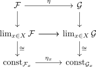

stalkwise characterization of monomorphisms
Proposition
Let $X$ be a topological space and $\eta: \mathcal{F} \Rightarrow \mathcal{G}$ a natural transformation
TFAE:
- $\varphi_{X}: \mathcal{F}_{x} \rightarrow \mathcal{G}_{x}$ is a monomorphism on all stalks
- $\eta:\mathcal{F} \Rightarrow \mathcal{G}$ is a monomorphism
Proof
1) $\implies$ 2)
using monomorphisms in functor categories it suffices to show the following: Let $s \neq t \in \mathcal{F}(U)$ be different germs. Then by germs uniquely define stalk for a sheaf there exists an $x \in X$ such that $s_{x} \neq t_{x}$. In particular, $\eta_x(s_{x}) \neq \eta_x(t_x)$ since $\eta$ is stalkwise injective. But we may identify $\eta(s_{x}) = \eta(s)_{x}$ since $\eta_{x}: \mathcal{F}_{x} \rightarrow \mathcal{G}_{x}$ is the unique morphism induced by the colimit and the composition $p_{\mathcal{F},x} \circ \eta$ induces a commutative diagram
Alternatively, use that the unit transformation is natural

Hence $\eta(s)_{x} \neq \eta(t)_{x}$ which implies $\eta(s) \neq \eta(t)$.
2) $\implies$ 1)
Recall that taking the stalks is a left exact functor (cf. stalk functor is left exact) and left exact functors preserve monomorphism Moreover, use the characterization/definition of monomorphisms as pullback diagram